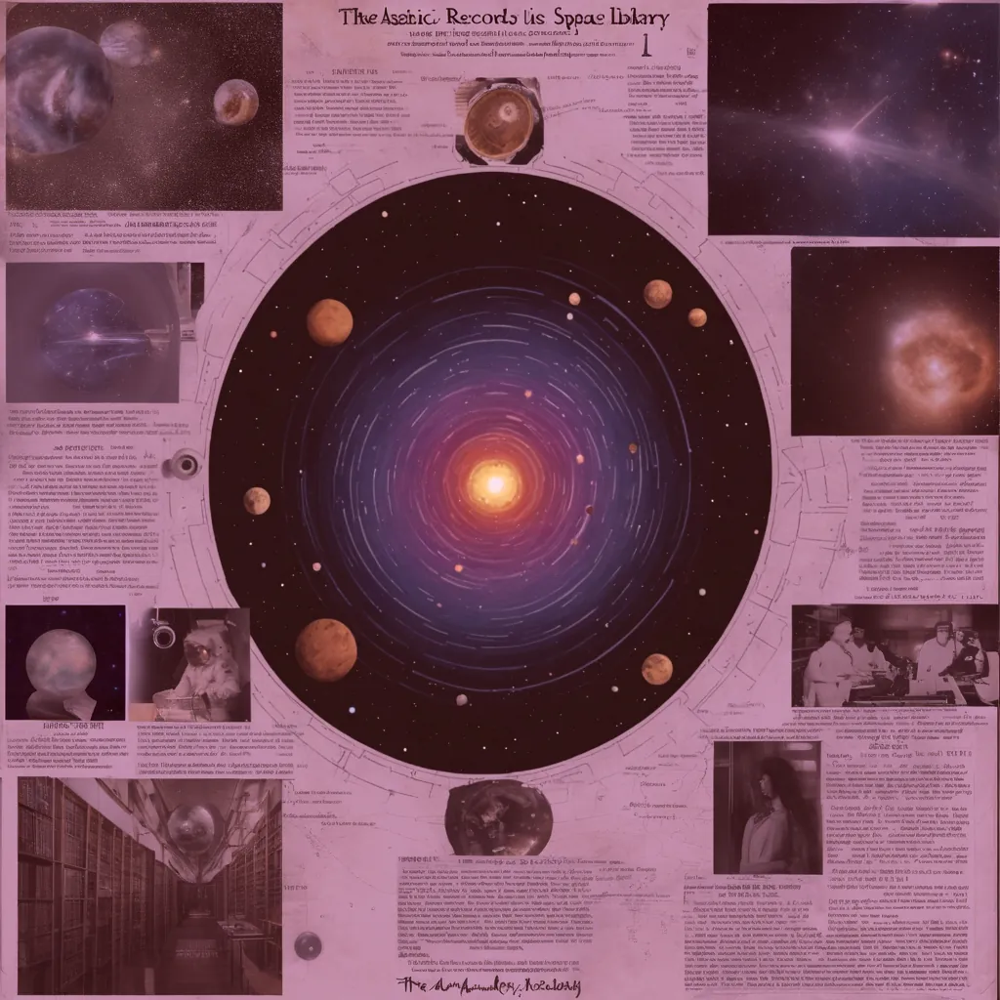

The Origins of the Akashic Records: A Historical Perspective
 Zan Dean
Zan Dean· 3 min read

The Origins of The Akashic Records
The origins of the Akashic Records have deep roots in various cultures throughout history, often referred to as the "Book of Life" or the "Hall of Records." The term "Akashic" originates from the Sanskrit word "Akasha," meaning "ether" or "space." In ancient Indian texts such as the Vedas and the Upanishads, the Akashic Records were a celestial library where all universal knowledge, thoughts, and experiences recorded themselves. Similarly, ancient Egyptian culture believed that a "Hall of Records" existed beneath the Sphinx, containing the world's history and the secrets of the universe. These records were considered a repository of all human knowledge and the collective experiences of all sentient beings.
How the Akashic Records Became Popular in the West
The concept of the Akashic Records gained significant traction in the Western world during the late 19th and early 20th centuries. Spiritualists and mystics such as Helena Blavatsky, Rudolf Steiner, and Edgar Cayce were instrumental in popularizing the idea. These individuals claimed to access the Akashic Records through psychic abilities, meditation, and spiritual practices. According to their teachings, the Akashic Records are not physical documents but exist on a higher plane of consciousness, accessible with proper training and intent. This accessibility has intrigued many, leading to various spiritual practices centered around reading the Akashic Records.
What Can You Learn from the Akashic Records?
Reading the Akashic Records offers profound insights into past lives, present experiences, and future possibilities. The records contain knowledge about the nature of the universe, the laws of physics, and the workings of the human mind. For those seeking guidance, the Akashic Records can be a powerful tool for understanding their soul's journey, current circumstances, and future potential. By accessing these records, individuals can realize their life's purpose, the lessons they are here to learn, and how to align themselves with their highest good.
What Is The Most Popular Akashic Record Reading Style?
One of the modern evolutions of Akashic Records readings is the practice of Soul Realignment. Founded by Andrea Hess, Soul Realignment is a contemporary form of Akashic Records reading that focuses on the energetic imprints of a person's soul. These imprints hold information about the soul's history, purpose, and potential. Soul Realignment views the Akashic Records as a repository of past experiences and a blueprint for an individual's current life and future possibilities.
Readers access The Akashic Records through an energetic connection and alignment process. The practitioner asks specific questions to identify any negative energetic imprints blocking the person's potential. These imprints are then cleared and replaced with positive energies that support the individual's highest good. Soul Realignment is one of several modern modalities incorporating the Akashic Records alongside practices like Akashic Records Healing, Akashic Records Meditation, and Akashic Records Therapy.
Experience the Power of Soul Activism with Zan Dean
Zan Dean has masterfully adapted her extensive training in Soul Realignment to create Soul Activism—a unique approach beyond traditional readings. By infusing her sessions with intuitive empowerment and action-centered practices, Zan offers deep insights that reveal your soul's history and purpose and provide practical steps for aligning your life with your highest potential. Soul Activism empowers you to take meaningful, aligned action on your spiritual journey.
If you're seeking a deeper connection with your soul's purpose, consider Soul Activism. As an experienced Akashic Records reader and spiritual guide, Zan Dean has dedicated her life to helping individuals unlock their true potential. Her approach provides profound insights and equips you with practical steps to align your life with your soul's highest path. Whether you're new to the Akashic Records or looking to deepen your spiritual practice, Zan's guidance will help you navigate the complexities of your soul's journey with clarity and confidence.
Approaching the Akashic Records with Discernment
While the Akashic Records are a powerful tool for personal growth and spiritual development, it's crucial to approach them with discernment. As with any spiritual practice, there is a risk of misinterpretation or distortion. Finding an experienced and ethical practitioner when exploring the Akashic Records is essential. Approaching these records with an open mind, healthy skepticism, and a critical eye ensures that the information received is meaningful and aligned with your highest good.
The Akashic Records continue to be a source of fascination and mystery, offering profound insights into the nature of the universe and our place within it. As the concept evolves in contemporary spiritual practices, respect, discernment, and an open mind are essential. Whether seeking answers to life's big questions or understanding your soul's journey, the Akashic Records offer a pathway to deeper self-awareness and spiritual growth. Contact Zan Dean today to explore how Soul Activism can help you unlock your full potential and live in alignment with your soul's true purpose.